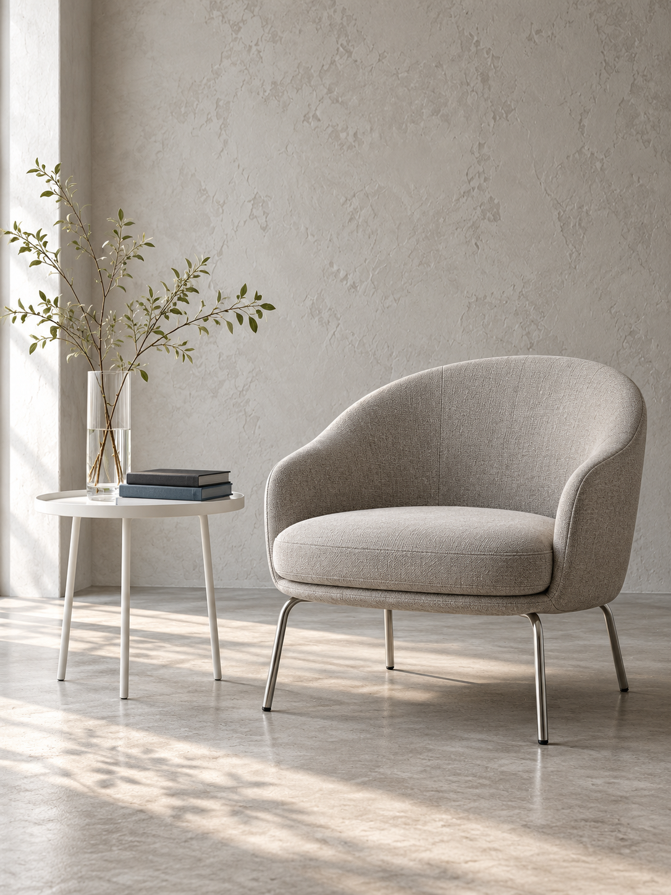

OBJECTS, SPACES& QUIET IDENTITIES
INDEPENDENT VISUAL STUDY
Considered objects.A little room to breathe.

SELECTED WORK / 01
The photograph and project chapters are independent additions. The original montage does not reveal this project’s full content.
A LOCAL CONVERSATION STARTER
This saves a draft in this page. It does not send an email or contact the named studio.
ABOUT THE STUDY
The visible reference pairs a large white name and blue “studio.” with a quiet furniture photograph. This independently coded page keeps that contrast and proportion.
The source montage covers the upper navigation and project details. Those elements, this text, the local brief and the photograph are authored additions. They are not an artist biography or a recovered client project.